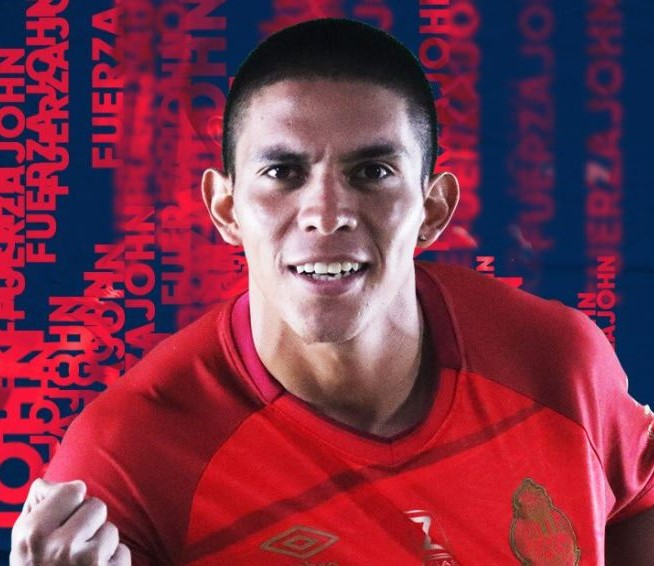

Plantilla del equipo 2022-23
Portero 🧤
Nombres
- 1) Kenderson Navarro
- 32) Luis Tatuaca
- 33) David Aldana
Defensas
Nombres
- 5) Milciades Portillo
- 13) Steve Makuka
- 16) Jose Morales
- 17) Eduardo Soto
- 4) Fernando Fuentes
Medio
Nombres
- 6) Jose Rosales
- 18) Jonathan Franco
- 31) Renato Sequen
- 26) Rudy Barrientos
- 30) Andy Ruiz
- 20) Cesar Archila
- 8) Pedro Altan
- 11) John Méndez
Delanteros
Nombres
- 7) Harim Quezada
- 25) Yasnier Matos
- 9) José Martinez
- 10) Matías Rotondi
aaaa
asdfsd
Juego de Preguntas (QUIZ)
Canciones de Municipal
答 Himno de Municipal 答
答 Vamos los Rojos 答
答 El Rojo esta de fiesta 答